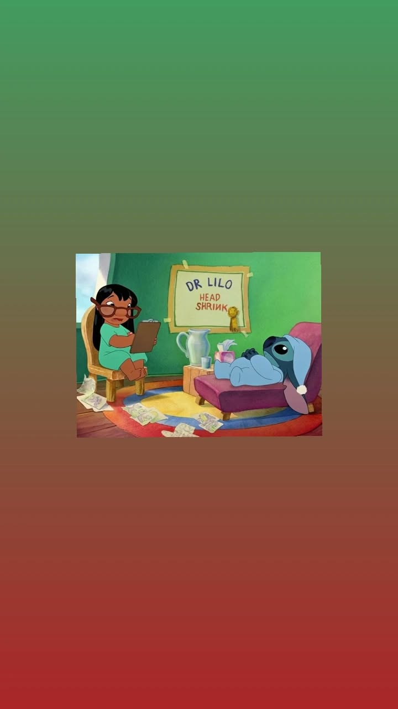

La resiliencia permite sobrellevar las crisis:
consiste en atravesar adversidades o situaciones de alto estrés e iniciar un proceso de progreso sin que la mente enferme , .
La terapia es un regalo de autocuidado:
asistir a un proceso psicoterapéutico brinda estrategias efectivas para gestionar el estrés, la ansiedad y la depresión .

Reconocer límites y buscar equilibrio reduce el desgaste:
aprender a controlar la propia reacción ante los factores estresantes y ajustar el ritmo de vida protege la salud psíquica , .
Las redes de apoyo previenen la soledad:
contar con familiares, amistades o comunidades de confianza brinda un refugio y contención esencial en momentos críticos , , .
El cuidado del cuerpo fortalece la mente:
mantener una alimentación saludable, realizar ejercicio físico, descansar lo suficiente y evitar el consumo de sustancias preserva el equilibrio mental , , .
Hablar sobre lo que abruma alivia la carga:
sincerarse y compartir los problemas con personas cercanas o profesionales hace que el peso emocional sea más ligero , .
Facilita la autorrealización y el bienestar:
una buena salud mental permite afrontar los retos de la vida con confianza, optimismo y autonomía .
La salud mental es tan vital como la física:
cuidarla es un proceso personal y colectivo que abarca cómo vivimos, sentimos, nos alimentamos, descansamos y nos relacionamos .